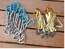
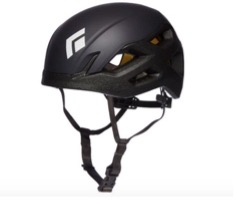

While on our site you can expect to see a range of information and photos to help you discover and understand indoor and outdoor climbing equipment from around the globe! We explain a huge variety of climbing gear, so you understand the latest and greatest climbing technology. We will explain what the gear is for, why you might need it, when you need it, how to use it (on some products only), safety features, and the typical price they sell for, so you do not buy overpriced items. We want you to feel confident in your indoor and outdoor climbing equipment. We will also include photos near the gear's explanations so you can see what the gear looks like and have a better understanding of what it's for and how to properly use it. Here at climbers co. we take your gear very seriously because it determines the safety of your climb.
Carabiners are vital for rock climbing. Whithout a carabiner climbing with ropes would be impossible. Carabiners connect the climbing roped to hooks in the rocks so you do not fall. They also connect your body and gear to the person on the ground who is climbing with you. When buying carabiners make sure they are a trusted brand and you buy the right size and shape. Carabiners can range from $10 to a couple hundred depending on how many you buy.
Outdoor rock climbing Helmets are very importaint to any and every outdoor climber. The helmet protects you from falling debris and from smacking your head on the rocks when you fall. Rock climbing helmets are typically compact and very light so the climber doesnt even realize it is there. Make sure you buy a helmet of the right size and head shape so you can be safe while climbing. Helmets range from $50 to $200.

The rock climbing ropes are very importaint. Ropes help us connect our bodys to the rock walls so we can climb. Climbing ropes are typically 200ft long and they are very strong. The ropes can hold over 2,400kg of weight and are very hard to break or damage. Climbers use ropes to connect us to ou harnesses so we can climb. when buying a rope make sure you buy one that is lightweight but strong. Ropes range from $100 to $300.